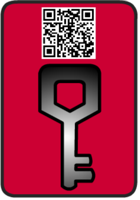

The Earthling
Solo Game Project – Unity | Art | Code | Animation
The Earthling is a solo-developed game made entirely in Unity, featuring original art, animations, and gameplay mechanics built from the ground up. The player must explore an alien world, collecting lost technology while avoiding environmental hazards.
Character and Game Objective
The Earthling (above): This is an original character I designed for the game — a lone explorer in an alien world. The suit design is custom-built to reflect their role as both survivor and puzzle-solver. I wanted to give them a sleek, futuristic aesthetic while keeping it visually simple and bold.

Key Card (above): This is the main collectible in the game — it’s what the player hunts down as the final piece needed to escape. I designed it to look like a futuristic access card, but with a splash of humor and bold iconography to make it stand out. The QR code adds a bit of fun mystery too.
Spaceship Goal Asset
This spaceship was designed as the end-goal of the game — representing escape and survival. Players navigate toward this ship, which functions as the final checkpoint and victory condition. It was modeled and illustrated specifically for The Earthling, and represents both artistic and gameplay integration.

Space Background Environment
This starfield and planetary background was created to visually establish the alien setting of The Earthling. It helps convey the isolation, vastness, and sci-fi tone of the game’s world, and is used throughout menus and environment layers to reinforce the interstellar theme.